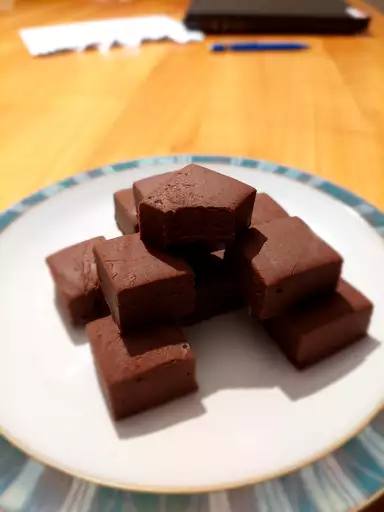

Old Fashioned Chocolate Fudge

Fudge?
Whether enjoyed during the holidays, on the boardwalk, or even on a regular ol' Tuesday, indulgent fudge is the perfect candy. With this chocolate fudge recipe, five ingredients is all you'll need to have the absolute best fudge for gifting or snacking.
Plus, this classic fudge recipe makes for a great base if you want to make new fudge creations by adding ingredients like nuts, candy, chocolate chips, or marshmallows.
Ingredients
- 2 cups white sugar
- ½ cup unsweetened cocoa powder
- 1 cup whole milk
- 4 tablespoons unsalted butter, sliced and softened
- 1 teaspoon vanilla extract
Steps
- Gather ingredients.
- Grease an 8-inch square baking pan.
- Place sugar and cocoa powder in a medium saucepan; pour in milk and stir until blended. Set heat to medium-high and stir constantly until mixture comes to a boil.
- Reduce heat to low and place a candy thermometer in the pan. Let the mixture simmer without stirring until the temperature reaches 238 degrees F (114 degrees C) when measured with a candy thermometer, about 10 minutes.
- If you don't have a candy thermometer, drop a small amount of the mixture into cold water; if it forms a soft ball that flattens when removed from the water and placed on a flat surface, it's ready.
- Remove from the heat. Allow to cool to 110 degrees F (43 degrees C), 50 to 70 minutes. Do not disturb fudge as it's cooling.
- Add butter and vanilla to the fudge. Beat with a wooden spoon until well incorporated and fudge loses its sheen; do not under beat.
- Pour fudge into prepared pan and press to flatten. Let cool at room temperature or in the refrigerator before cutting into 1-inch squares.
- Enjoy!